Статья 29. Вектор привязки
В процессе создания каких-либо не прямоугольных фигур или если мы рисуем в изометрии может возникнуть необходимость пометить какую-то точку для последующего использования. Можно для этого использовать линию. Но если таких точек надо 5 или 10, то тут уже можно легко запутаться, где какая точка к чему относится.
Для таких случаев можно создать фигуру, которая бы отличалась от линии и однозначно определяла бы необходимую точку привязки.
Соответственно, нам нужен вектор, т.к. у вектора есть начало и направление. Но вначале надо, чтобы линия отличалась. Как один из вариантов могу предложить сделать линию с линией. Такая линия будет однозначно отличаться от других линий.
Для этого сначала создадим Line Patterns и назовем его Marker. Настраиваем поведение как показано в окне ниже и далее по порядку.
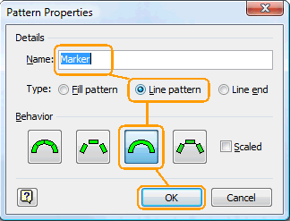
- Создаем прямоугольник произвольной высоты.
- Примерно вполовину создаем красный прямоугольник без контура.
- Затем поверх рисуем линию, и делаем её толщину в 0 pt.
- Потом убираем линию на задний план и группируем.
- И теперь выделяем белый прямоугольник в группе и удаляем его.
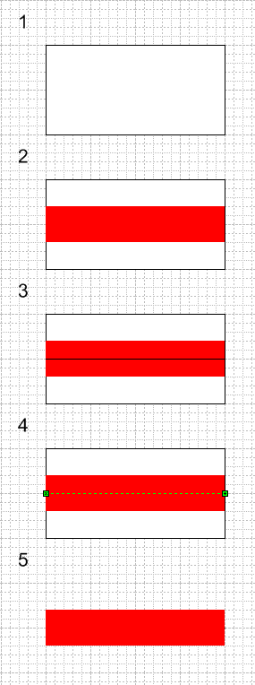
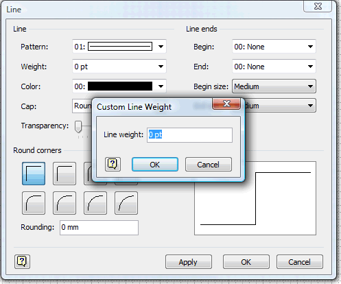
Итак, наша заготовка готова. Можем выйти из режима редактирования, применить Marker шаблон к линии и увидеть линию в линии.
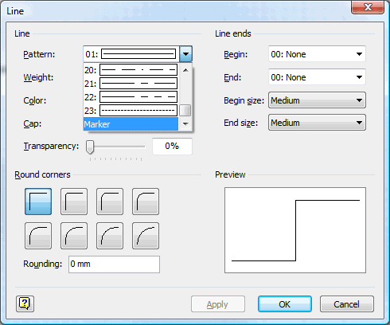
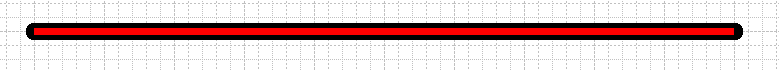
Дальше осталось сделать вектору начало — привязку. Для этого создаем конечный шаблон линии и называем его Vector.
Настраиваем поведение, как показано в окне ниже и далее снова по порядку.
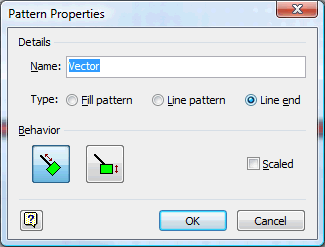
- Создаем два круга.
- затем прямоугольник
- Объединяем.
- Затем еще один круг
- Убираем у фигур линии, разукрашиваем и группируем.
- Сжимаем группу в ноль для предотвращения конечного перехода, который описан в этой статье.
- Перемещаем фигуры как показано на рисунке.
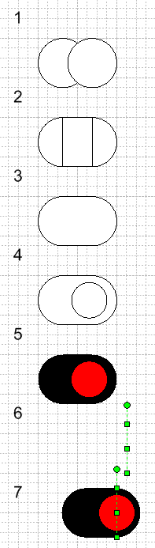
Все. Осталось только назначить конечный шаблон линии Vector и вектор привязки готов.
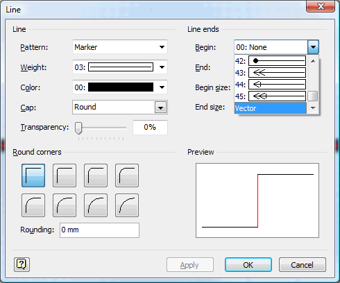
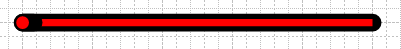
Осталось только показать применение вектора привязки «в деле»
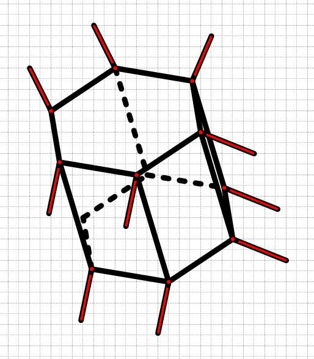
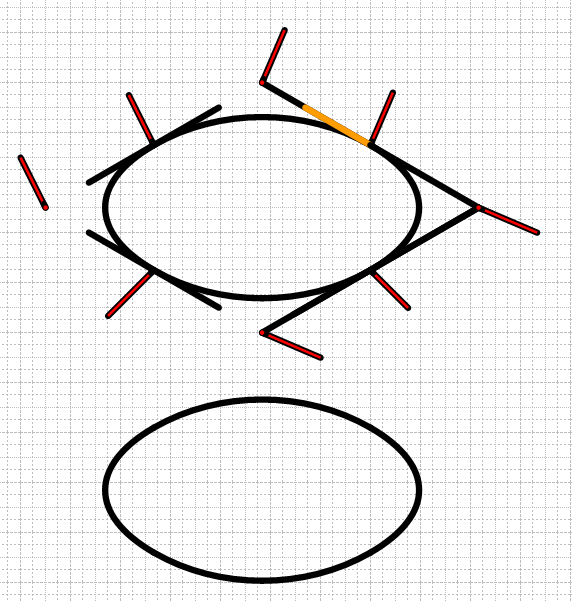
Статьи: 1 2 3 4 5 6 7 8 9 10 11 12 13 14 15 16 17 18 19 20 21 22 23 24 25 26 27 28 29 30
В начало раздела
Автор: Ничков Алексей (a.k.a. Digitall)